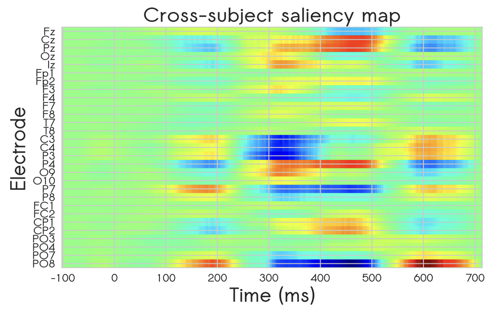
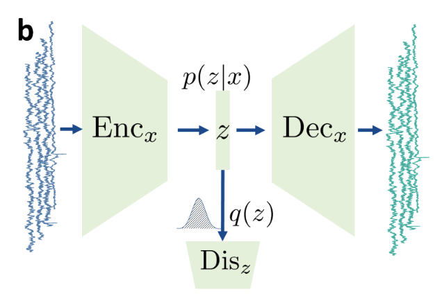
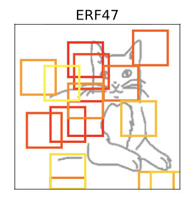
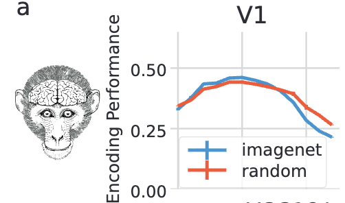

Hello, I'm
Dr. Amr Farahat
Data Science Engineer & NeuroAI Researcher
Exploring the intersection of biological and artificial intelligence to decode the brain and develop responsible intelligent systems.
Education
PhD - International Max Planck Research School for Neural Circuits
Frankfurt, Germany / Nijmegen, Netherlands
2020 – 2025Donders Centre for Neuroscience, Radboud University
Ernst Strüngmann Institute for Neuroscience in Cooperation with Max Planck Society
Thesis: On the predictive and explanative roles of deep neural networks in neuroscience.
MSc - Integrative Neurosciences
Otto von Guericke University, Magdeburg, Germany
2015 – 2018Thesis: Deep Learning for EEG Decoding and Automatic Feature Discovery.
MD - Medical School
Mansoura University, Mansoura, Egypt
2007 - 2014Experience
Data Science Engineer
Green Fusion, Berlin, Germany
2025 - PresentPhD Researcher
Ernst Strüngmann Institute for Neuroscience in Cooperation with Max Planck Society, Frankfurt, Germany
2020 - 2025Predoctoral Researcher
Max Planck Institute for Brain Research & Frankfurt Institute for Advanced Studies, Frankfurt, Germany
2019 - 2020Neuroradiology Resident Doctor
Otto von Guericke University Hospital, Magdeburg, Germany
2019General Practitioner
Ministry Of Health and Population, Ras Ghareb, Egypt
2015Skills & Languages
Technical Skills
Languages
Projects

Deep Learning for EEG Decoding and Automatic Feature Discovery
Developed CNN models for classifying P300 ERP component in EEG data for a Brain Computer Interface (BCI) speller application. Used saliency maps to extract relevant spatial and temporal EEG features.

Diagnosing Epileptogenesis with Deep Anomaly Detection
Used data from a rodent epilepsy model to show the feasibility of an unsupervised deep anomaly detection framework using adversarial autoencoders to detect subtle changes in brain electrical activity.

Spatial Relations and Feature-Scrambling in CNNs
Developed a feature-scrambling approach to investigate the granularity of features used by CNNs for object recognition and whether they encode spatial relations among features.

Predicting Neural Responses with Random-Weight CNNs
Evaluated how well untrained and trained CNNs predict neural activity across the visual cortex in humans and monkeys, varying architectural components.
Selected Publications
J. Liu, A. Farahat, and M. Vinck, "Representational drift shows same-class
acceleration in visual cortex and artificial neural networks," bioRxiv, 2025.
DOI: 10.1101/2025.11.05.686897
A. Farahat and M. Vinck, "Neural responses in early, but not late, visual cortex
are well predicted by random-weight CNNs with sufficient model complexity," bioRxiv, 2025.
DOI: 10.1101/2025.02.05.636721
A. Voegtle, L. Terzic, A. Farahat, et al., "Ventrointermediate thalamic
stimulation improves motor learning in humans," Communications Biology, vol. 7, no. 1, p. 798,
2024.
DOI: 10.1038/s42003-024-06462-5
A. Farahat, F. Effenberger, and M. Vinck, "A novel feature-scrambling approach
reveals the capacity of convolutional neural networks to learn spatial relations," Neural
Networks, vol. 167, pp. 400–414, 2023.
DOI:
10.1016/j.neunet.2023.08.021
L. Terzic, A. Voegtle, A. Farahat, et al., "Deep brain stimulation of the
ventrointermediate nucleus of the thalamus to treat essential tremor improves motor sequence
learning," Human Brain Mapping, 2022.
DOI: 10.1002/hbm.25989
A. Farahat, D. Lu, S. Bauer, et al., "Diagnosing epileptogenesis with deep
anomaly detection," Proceedings of the 7th Machine Learning for Healthcare Conference, vol. 182,
2022.
PMLR 182:1-18 (PDF)
A. Farahat, C. Reichert, C. M. Sweeney-Reed, and H. Hinrichs, "Convolutional
neural networks for decoding of covert attention focus and saliency maps for EEG feature
visualization," Journal of neural engineering, vol. 16, no. 6, 2019.
DOI: 10.1088/1741-2552/ab3bb4
Further Qualifications
The Machine Learning Summer School
Okinawa, Japan | 2024
The Systems Vision Science Summer School
Tübingen, Germany | 2023
IBRO-Simons Computational Neuroscience Imbizo
Cape Town, South Africa | 2022
FENS Summer School on Artificial and Natural Computations
Bertinoro, Italy | 2022
Eastern European Machine Learning Summer School (EEML)
A deep learning and reinforcement learning summer school | 2021
Neuromatch Academy (Interactive Track)
An online school for Computational Neuroscience | 2020
International Startup School
TUGZ, Otto von Gureicke University, Germany | 2018
Business Planning Course
Chair of Entrepreneurship, Otto von Gureicke University, Germany | 2018
5th Human Brain Project winter school: Future Medicine
Obegugl, Austria — Influencing clinical diagnoses and treatments by data mining analysis- and modeling-driven neuroscience | 2017
4th Human Brain Project summer school: Future Computing
Obegugl, Austria — Brain Science and Artificial Intelligence | 2017